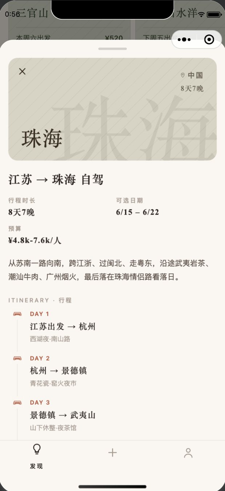
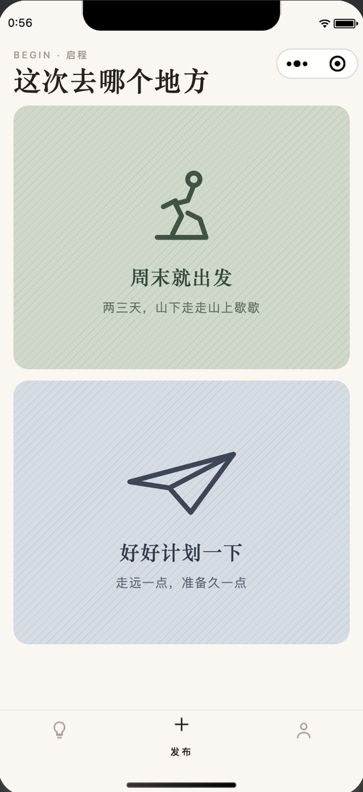
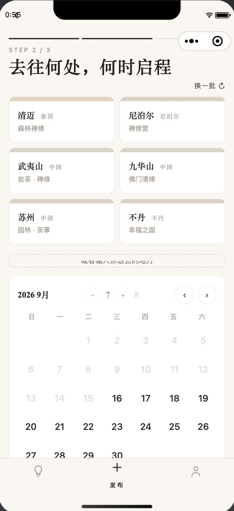
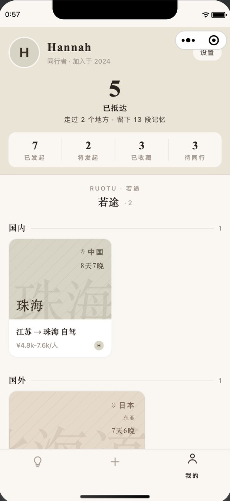
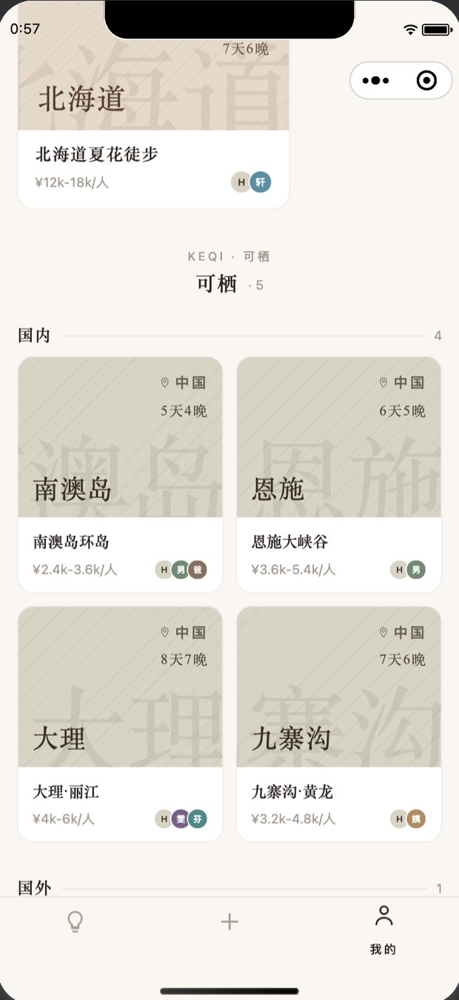

PROJECT 02 · 微信小程序
结伴同行 · 结伴出行
把「想去哪儿」和「和谁一起去」放进同一个界面：发布行程、浏览并申请加入别人的行程、把去过的地方沉淀成足迹。
开发中，尚未上线。截图来自微信开发者工具模拟器，数据为演示数据；界面里的「若途」「可栖」是开发期给两组行程起的名字。






PROJECT 02 · 微信小程序
把「想去哪儿」和「和谁一起去」放进同一个界面：发布行程、浏览并申请加入别人的行程、把去过的地方沉淀成足迹。
开发中，尚未上线。截图来自微信开发者工具模拟器，数据为演示数据；界面里的「若途」「可栖」是开发期给两组行程起的名字。





写小程序之前，先用单文件 HTML 做可点击原型，验证信息结构和交互。两版都保留了下来，因为第二版不是第一版的升级，而是换掉了一整条主流程。
| v1 · 手动编排（2026.04.13） | v2 · 目的地驱动（2026.04.20） | |
|---|---|---|
| 行程从哪来 | 用户填写标题、目的地、日期、人数、预算、描述，再逐天添加行程 | 选好目的地，行程标题、描述、预算和逐日安排先生成草稿，再修改 |
| 发现的问题 | 一次发布要填七八个字段还要逐天编排，填写负担太重，会劝退发布 | — |
| 首页与「我的」 | 行程平铺成一条列表 | 首页按国内 / 国外分区；「我的」拆成「将要去」和「已抵达」 |
正式小程序沿用了 v2 的结构：发现页按地域分组、「我的」页分为「将要去」和「已抵达」两组、发布流程从目的地开始。v1 的手动编辑器没有带进来，但预算、人数上限、描述这些字段设计保留了。
个人足迹做成按年月排列的横向卡片，没有个人记录时改为展示社区足迹；下面是周末短途和按地域分组的即将出发行程，点开是半屏详情卡。
分「周末就出发」和「好好计划一下」两种模式。长途 3 步：旅行风格 → 目的地、日期与天数 → 行程项目，顶部步骤条可以点击跳步。
已抵达的地点汇总统计；行程分「将要去」和「已抵达」两组，组内再分国内、国外；头像底色从调色板里自选，不用上传图片。